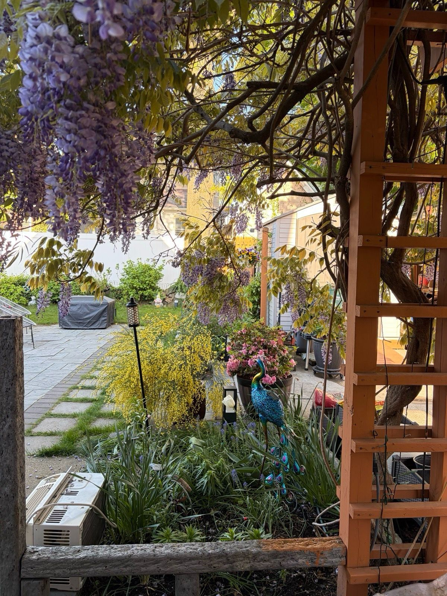
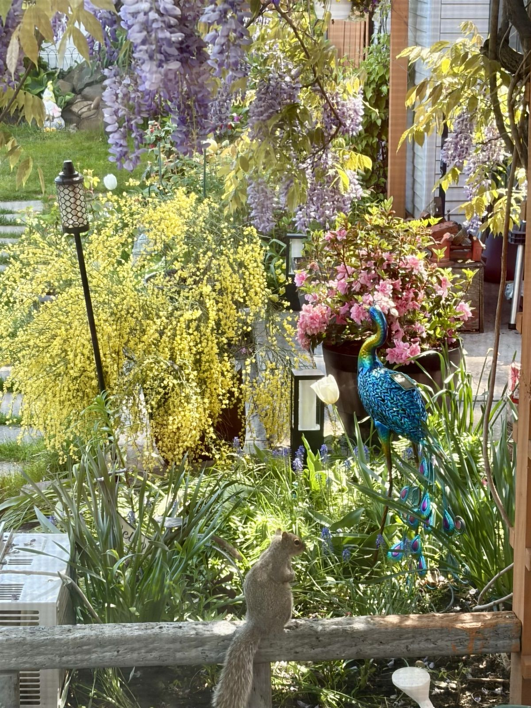
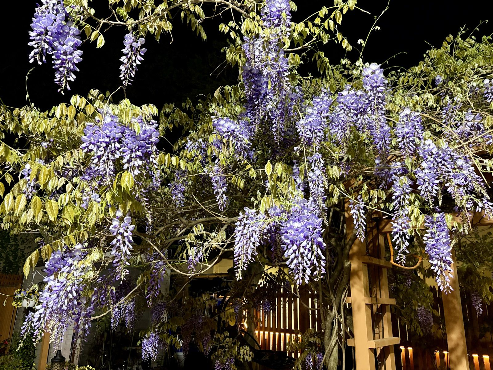

Wisteria Week
There are about ten days a year when this garden peaks, and they all belong to the wisteria. It came with the house as a tangled old vine on a sagging arbor, and after years of negotiation — it grows, I cut, it grows anyway — we've reached an understanding: it gets the whole arbor, the fence line, and part of the neighbor's tree, and in exchange it does this.

Standing underneath is the best spot in the yard that week. Hundreds of racemes hang through the slats and the bees run a full shift up there — a low hum from morning to dusk, like the arbor is idling. The scent is grape soda and rain.

This is the view that makes doing dishes tolerable. Wisteria hanging like a beaded curtain, the Scotch broom going full gold underneath, the potted azalea blooming its heart out, and the metal peacock supervising. The squirrel appears at the same hour every morning to check whether I've grown anything for him yet. (No.)

And at night it becomes something else entirely — the fence lights catch the racemes from below and they float against the dark like lavender chandeliers. I stood out there in slippers for twenty minutes taking nearly identical photos. No regrets.
The honest part: wisteria is a commitment. Mine gets pruned twice a year — all those whippy summer shoots back to about six inches in July, then a harder tidy in winter — and that pruning is exactly why it blooms like this instead of turning into a leafy monster. Skip a year and it will absolutely take the gutter off the garage. Ask me how I know.